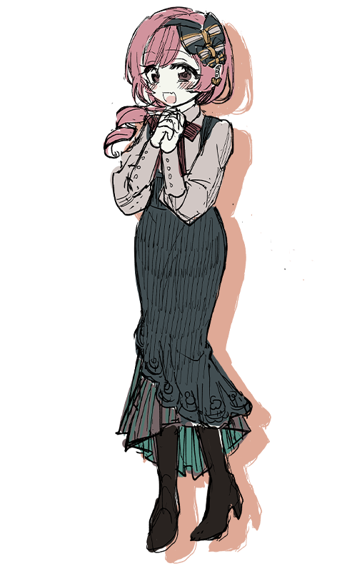

『16人の救世主』
「マキナのことだけ、ずっと考えて」
種別：救世主 脅威度：1→3 能力値：愛3→愛3・猟奇2
性別：女 年齢：17 身長：160cmくらい 誕生日：冬
本名は槇名 優子。
漢字も響きもなんか嫌で、大体「マキナ」とだけ名乗る。
他人を利用するために自分の身体を使うタイプのビッチ。
堕落の国に落ちてしばらくは、ヨハンという男に取り入って裁判を生き延びていた。
オールドメイドゲームでヨハンを失い、チカという少年と出会う。
はじめはいつものように利用するつもりでいたが、裁判を重ね、共に傷つき、
心を交わすごとに彼に惹かれていった。
チカとともにオールドメイドゲームを勝ち抜き、堕落の国を救済した。
好き：チカくん、お風呂、青空
苦手：尖ったもの、目つきの悪い人、一人
back